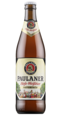

Paulaner Hefe-Weisbeer
По цвету пиво оранжеватое, с туманностью Альбиона. По аромату при вдохе чувствуются какие то легкие восточные специи и пшеничность, пресловутого аромата банана я не нащупал. Дальше по вкусу: пиво легкое, очень сбалансированное, но в тоже время насыщенное. Горечь едва заметна и лишь играет на фоне и мягко скрашивает послевкусие. Хорошее пиво, вкусное, пьётся легко и приятно, любителям пшеничного обязано понравится, но ничего особенного в нем не нашлось.

prague15031939
13:13
10/10. Нестареющая мюнхенская классика. Чистейший вкус, отдающий благородством. Лучшее пшеничное пиво на рынке.
Andrew
22:56
Paulaner мне нравится за исключением одного яркого момента.
Почему никто не упоминает про то, что к середине бутылки он начинает ужасно кислить.
Без закуски неочень приятно заходит.